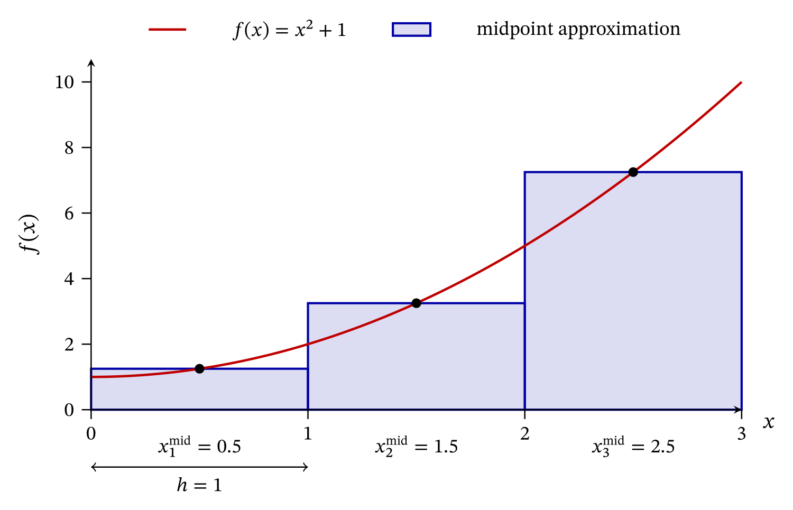
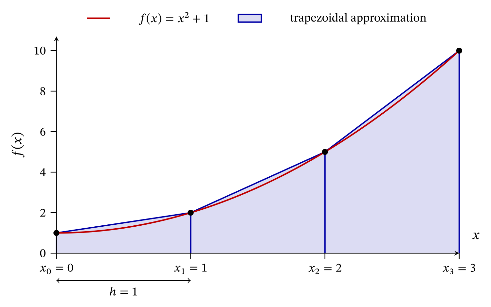
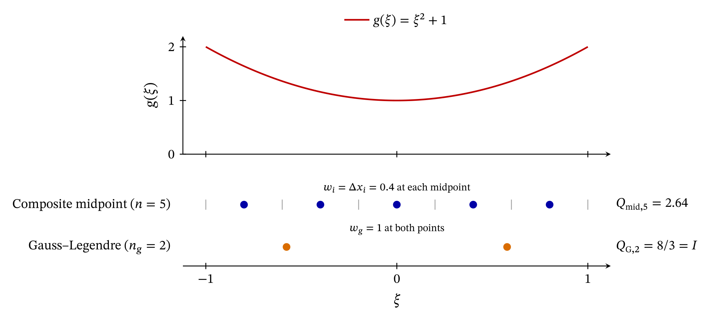
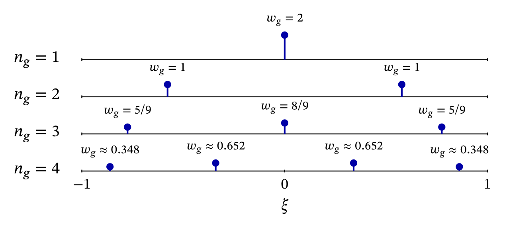

13 Numerical integration in one dimension
The stiffness matrix and consistent distributed-load vector of the two-node linear bar element were previously derived as
\[ \mathbf{K}_e = \int_{\Omega_e} \mathbf{B}^{\mathsf T}EA\mathbf{B}\,dx \]
and
\[ \mathbf{f}_e^q = \int_{\Omega_e} \mathbf{N}^{\mathsf T}q\,dx. \]
For constant material properties, cross-sectional area, and distributed load, these integrals were evaluated in closed form. Closed-form integration becomes less practical when the quantities appearing in an element integrand vary within the element or combine into expressions that are increasingly difficult to integrate analytically. A systematic numerical procedure is then preferable.
This chapter develops the basic ideas of one-dimensional numerical integration, including the Gauss–Legendre quadrature rules, which are the most relevant to the finite element method. These integration rules are developed independently of element geometry. Their use in bar-element integrals is revisited later, once the necessary geometrical description has been introduced.
13.1 The quadrature idea
Consider a scalar function \(f(x)\) defined on a finite interval \([a,b]\). Its integral is
\[ I = \int_a^b f(x)\,dx. \]
A numerical quadrature rule replaces this integral by a finite weighted sum,
\[ \boxed{ Q = \sum_{i=1}^{n}w_i f(x_i) \approx I. } \]
In this expression,
- \(n\) is the number of integration points;
- \(x_i\) is the location of integration point \(i\);
- \(w_i\) is the weight associated with integration point \(i\);
- \(f(x_i)\) is the value of the integrand at that point.
The collection of point locations and weights defines the quadrature rule.
Different quadrature rules select the points and weights in different ways. A rule is useful when the weighted sum provides sufficient accuracy without requiring too many evaluations of the integrand.
13.1.1 Integration of a constant function
Suppose that the quadrature rule integrates the constant function
\[ f(x)=1 \]
exactly. The exact integral is
\[ \int_a^b 1\,dx = b-a, \]
while the quadrature rule gives
\[ Q = \sum_{i=1}^{n}w_i. \]
The weights must therefore satisfy
\[ \boxed{ \sum_{i=1}^{n}w_i=b-a. } \]
The quadrature weights sum to the length of the integration interval. Equivalently, the rule integrates a constant function exactly. This property is shared by the midpoint, trapezoidal, and Gauss–Legendre rules considered in this chapter.
The same idea extends to higher-dimensional domains: the quadrature weights sum to the measure of the domain (its area in two dimensions and its volume in three dimensions).
13.2 Quadrature error and computational cost
The quadrature error is the difference between the numerical and exact values. Its magnitude is
\[ \boxed{ e_Q = |Q-I|. } \]
The exact value \(I\) is usually unknown when numerical integration is actually needed. Nevertheless, examples with known analytical integrals are valuable because they reveal the accuracy of a rule and provide verification problems for a later implementation.
Accuracy is not the only consideration. Every term in the quadrature sum requires an evaluation of the integrand. In a finite element calculation, this evaluation may include shape functions, derivatives, material properties, and constitutive relations, and it is repeated at the integration points of every element. The practical objective is therefore to obtain adequate accuracy with as few function evaluations as possible.
We first examine two familiar rules based on dividing the integration interval into a chosen number of subintervals. They introduce two central ideas: improving accuracy through refinement and describing the resulting error through an order of accuracy. These ideas provide a basis for understanding how Gauss–Legendre quadrature pursues accuracy in a different way.
13.3 The composite midpoint rule
Divide \([a,b]\) into \(n\) subintervals,
\[ a=x_0<x_1<\cdots<x_n=b. \]
On subinterval \([x_{i-1},x_i]\), define the midpoint
\[ x_i^{\mathrm{mid}} = \frac{x_{i-1}+x_i}{2} \]
and the subinterval width
\[ \Delta x_i = x_i-x_{i-1}. \]
The midpoint rule approximates the area under the function over each subinterval by the area of a rectangle whose height is the function value at the midpoint:
\[ \boxed{ Q_{\mathrm{mid}} = \sum_{i=1}^{n} \Delta x_i\, f\!\left(x_i^{\mathrm{mid}}\right). } \]
The term composite in composite midpoint rule means that the rule is assembled from multiple elementary midpoint approximations, one on each subinterval as shown in the formula above.
The integration points are the subinterval midpoints, and the weights are the subinterval widths. Consequently,
\[ \sum_{i=1}^{n}\Delta x_i=b-a. \]
For \(n\) equal subintervals,
\[ \Delta x_i=h=\frac{b-a}{n}, \]
and the rule becomes
\[ Q_{\mathrm{mid}} = h\sum_{i=1}^{n}f\!\left(a+\left(i-\frac12\right)h\right). \]
The midpoint rule integrates constant and linear functions exactly. For a general function, however, it produces an approximation.
13.3.1 Midpoint rule for a quadratic function
Consider the quadratic function
\[ f(x)=x^2+1, \qquad x\in[0,3]. \]
The exact integral is
\[ I = \int_0^3(x^2+1)\,dx = \left[\frac{x^3}{3}+x\right]_0^3 = 12. \]
The interval is divided into three equal subintervals giving \(h=1\) and the midpoint locations
\[ x_1^{\mathrm{mid}}=0.5, \qquad x_2^{\mathrm{mid}}=1.5, \qquad x_3^{\mathrm{mid}}=2.5. \]
Figure 13.1 shows the geometric construction of the composite midpoint rule. Each shaded rectangle has width \(h=1\) and height equal to the value of the integrand at the corresponding subinterval midpoint. The sum of the three shaded areas gives the quadrature approximation.

The approximation is therefore
\[ \begin{aligned} Q_{\mathrm{mid}} &= f(0.5)+f(1.5)+f(2.5) \\ &= 1.25+3.25+7.25 \\ &= 11.75. \end{aligned} \]
The absolute error is
\[ e_Q = |11.75-12| = 0.25, \]
and the relative error is approximately \(2.08\%\).
13.3.2 Accuracy through refinement
The preceding quadratic example also makes it possible to quantify how the approximation improves as the partition is refined.
To do so, consider a quadratic function \(f(x)\) on \([a,b]\) and divide the interval into \(n\) equal subintervals of width
\[ h=\frac{b-a}{n}. \]
Because \(f\) is quadratic, its second derivative \(f''\) is constant. For this class of functions, the difference between the exact integral and the composite midpoint approximation is
\[ \boxed{ I-Q_{\mathrm{mid},n} = n\frac{f''h^3}{24} = \frac{f''(b-a)^3}{24n^2}. } \]
Consider one subinterval and denote its midpoint by \(m_i\). The coordinate of any point in that subinterval can be written as
\[ x=m_i+s, \qquad -\frac{h}{2}\leq s\leq\frac{h}{2}. \]
Because \(f\) is quadratic, all its derivatives of order three and higher vanish. Its second-order Taylor expansion about the midpoint therefore contains no remainder:
\[ f(m_i+s) = f(m_i) + f'(m_i)s + \frac{1}{2}f''s^2. \]
Note that this second-order Taylor polynomial is not merely a local approximation: it reproduces \(f(m_i+s)\) exactly for every \(s\) in the subinterval.
The midpoint rule uses
\[ hf(m_i) \]
as the approximation over this subinterval. This is exactly the integral of the constant term in the Taylor expansion.
The linear term produces no error because it is antisymmetric about the midpoint:
\[ \int_{-h/2}^{h/2}f'(m_i)s\,ds=0. \]
The first contribution not represented by the midpoint rectangle is therefore the quadratic term, whose coefficient contains \(f''\). Integrating the complete expansion gives
\[ \begin{aligned} \int_{x_{i-1}}^{x_i}f(x)\,dx &= \int_{-h/2}^{h/2} \left[ f(m_i) + f'(m_i)s + \frac{1}{2}f''s^2 \right]ds \\ &= hf(m_i) + \frac{f''h^3}{24}. \end{aligned} \]
The first term is exactly the midpoint-rule contribution. The error over one subinterval is consequently
\[ \frac{f''h^3}{24}. \]
Since \(f''\) is constant for a quadratic function, every equal subinterval has the same error. Summing the \(n\) subinterval errors produces the composite midpoint-rule error stated above.
The error can be expressed either in terms of the number of subintervals \(n\) or their width \(h\). Since
\[ h=\frac{b-a}{n}, \]
on a fixed interval we have
\[ \frac{1}{n^2} = \frac{h^2}{(b-a)^2}. \]
Therefore, an error proportional to \(1/n^2\) is equivalently proportional to \(h^2\). This behavior is written
\[ e_Q=O(h^2), \]
or, equivalently on a fixed interval,
\[ e_Q=O(n^{-2}). \]
The notation \(O(h^2)\) (read “big \(O\) of \(h\) squared”) describes the asymptotic behavior of the error as \(h\) approaches zero: for sufficiently small \(h\), its magnitude is bounded by a constant times \(h^2\). More explicitly, there exist constants \(C>0\) and \(h_0>0\) such that
\[ e_Q(h) \leq C h^2 \qquad \text{whenever }0<h<h_0. \]
Thus, once the subintervals are sufficiently small, \(Ch^2\) provides an upper limit for the error magnitude. The constant \(C\) does not change as the interval is refined. A quadrature rule with this behavior is said to be second-order accurate with respect to the subinterval width.
Now apply this result to the quadratic function
\[ f(x)=x^2+1 \]
on the interval \([0,3]\). For this function,
\[ f''=2, \qquad b-a=3, \qquad h=\frac{3}{n}. \]
Therefore,
\[ \begin{aligned} I-Q_{\mathrm{mid},n} &= \frac{f''(b-a)^3}{24n^2} \\ &= \frac{2\cdot3^3}{24n^2} \\ &= \frac{2.25}{n^2}. \end{aligned} \]
The constant term \(1\) in \(f(x)=x^2+1\) contributes no quadrature error because the midpoint rule integrates constant functions exactly.
As shown above, for any quadratic function this relationship is exact for every value of \(n\), not merely asymptotic. For the present example, \(b-a=3\) and \(h=3/n\), so
\[ e_Q = \frac{2.25}{n^2} = \frac{h^2}{4}. \]
Consequently, doubling \(n\) halves \(h\) and reduces the midpoint-rule error by a factor of four.
The exact identity above shows that the bound can be taken with
\[ C=\frac{1}{4} \]
for every admissible subinterval width \(h=3/n\). This is the smallest possible value of \(C\) for this example, because equality holds in
\[ e_Q(h)\leq C h^2. \]
Any larger value of \(C\) would also satisfy the bound, so the constant appearing in big-\(O\) notation is not generally unique. What is special here is that the relationship
\[ e_Q=\frac{h^2}{4} \]
holds throughout the entire refinement sequence, not only after the subintervals have become sufficiently small.
Since
\[ I = \int_0^3(x^2+1)\,dx = 12, \]
the relative error is
\[ \frac{|I-Q_{\mathrm{mid},n}|}{I} = \frac{2.25}{12n^2} = \frac{0.1875}{n^2}. \]
To obtain a relative error no greater than \(1\%\), we require
\[ \frac{0.1875}{n^2} \leq 0.01, \]
which gives
\[ n\geq5. \]
With five midpoint evaluations,
\[ Q_{\mathrm{mid},5} = 12-\frac{2.25}{5^2} = 11.91, \]
and the relative error is \(0.75\%\).
This example illustrates one way of improving a composite rule such as the midpoint or trapezoidal rule: subdividing the interval more finely, which increases the number of integration points used. For these composite rules, refining the partition and increasing the point count are the same action. This is not true of quadrature rules in general: Gauss–Legendre quadrature, introduced later in this chapter, instead increases accuracy by using more points on a fixed interval.
13.4 The composite trapezoidal rule
The trapezoidal rule uses the function values at the endpoints of each subinterval. Over the subinterval \([x_{i-1},x_i]\), the function is replaced by the straight line joining
\[ \bigl(x_{i-1},f(x_{i-1})\bigr) \]
and
\[ \bigl(x_i,f(x_i)\bigr). \]
Integrating this straight-line approximation over the subinterval gives the trapezoidal contribution. When the endpoint values are nonnegative, this contribution is geometrically the area of a trapezoid. Summing the contributions over all subintervals gives
\[ \boxed{ Q_{\mathrm{trap}} = \sum_{i=1}^{n} \Delta x_i \frac{f(x_{i-1})+f(x_i)}{2}. } \]
For \(n\) equal subintervals of width \(h\),
\[ Q_{\mathrm{trap}} = h \left[ \frac{f(x_0)}{2} + \sum_{i=1}^{n-1}f(x_i) + \frac{f(x_n)}{2} \right]. \]
Like the midpoint rule, the trapezoidal rule integrates constant and linear functions exactly.
13.4.1 Trapezoidal rule for a quadratic function
For
\[ f(x)=x^2+1 \]
on \([0,3]\), three equal subintervals give the endpoint values
\[ f(0)=1, \qquad f(1)=2, \qquad f(2)=5, \qquad f(3)=10. \]
Figure 13.2 shows the corresponding piecewise-linear approximation. The quadrature value is the total area of the shaded region beneath the three straight segments joining consecutive endpoint values.

The trapezoidal approximation is therefore
\[ \begin{aligned} Q_{\mathrm{trap}} &= \frac{1}{2}f(0)+f(1)+f(2)+\frac{1}{2}f(3) \\ &= \frac12+2+5+5 \\ &= 12.5. \end{aligned} \]
This can now be set alongside the midpoint result obtained earlier for the same function and partition:
\[ Q_{\mathrm{mid}}=11.75, \qquad I=12, \qquad Q_{\mathrm{trap}}=12.5. \]
The function \(x^2+1\) is strictly convex. In Figure 13.2, each straight segment coincides with the graph at the subinterval endpoints and lies above it in the interior. The trapezoidal rule therefore overestimates the integral. The midpoint rectangles in Figure 13.1 do not lie entirely below the graph: each rectangle intersects the graph at the corresponding midpoint. For a convex function, the average function value over a subinterval is greater than or equal to its value at the midpoint (Jensen’s inequality). The inequality is strict for the present quadratic function, so the midpoint rule underestimates the integral.
13.4.2 Accuracy of the composite trapezoidal rule
As with the midpoint rule, consider a quadratic function \(f(x)\) on \([a,b]\), divided into \(n\) equal subintervals of width \(h=(b-a)/n\). Because \(f\) is quadratic, \(f''\) is constant, and the difference between the composite trapezoidal approximation and the exact integral is
\[ \boxed{ Q_{\mathrm{trap},n}-I = n\frac{f''h^3}{12} = \frac{f''(b-a)^3}{12n^2}. } \]
The endpoints of a subinterval correspond to \(s=-h/2\) and \(s=h/2\) in the exact midpoint-centered expansion
\[ f(m_i+s) = f(m_i) + f'(m_i)s + \frac{1}{2}f''s^2 \]
derived above. The trapezoidal contribution over this subinterval is
\[ Q_{\mathrm{trap},i} = \frac{h}{2} \left[ f\left(m_i-\frac{h}{2}\right) + f\left(m_i+\frac{h}{2}\right) \right]. \]
Substituting \(s=\mp h/2\) into the expansion gives
\[ \begin{aligned} Q_{\mathrm{trap},i} &= \frac{h}{2} \left[ f(m_i) - f'(m_i)\frac{h}{2} + \frac{f''h^2}{8} \right. \\ &\qquad\qquad\left. + f(m_i) + f'(m_i)\frac{h}{2} + \frac{f''h^2}{8} \right] \\ &= hf(m_i) + \frac{f''h^3}{8}. \end{aligned} \]
The linear terms cancel between the two endpoints, leaving only the constant and quadratic contributions. The exact integral over the same subinterval was found previously to be
\[ I_i = hf(m_i) + \frac{f''h^3}{24}. \]
The trapezoidal-rule error over one subinterval is therefore
\[ Q_{\mathrm{trap},i}-I_i = \frac{f''h^3}{12}. \]
Since \(f''\) is constant for a quadratic function, every equal subinterval has the same error. Summing the \(n\) subinterval errors produces the composite trapezoidal-rule error stated above.
As with the midpoint rule, this result is exact for any quadratic function, for every value of \(n\) — not merely asymptotic. For the present example,
\[ f''=2, \qquad b-a=3, \qquad h=\frac{3}{n}, \]
so
\[ \begin{aligned} Q_{\mathrm{trap},n}-I &= \frac{f''(b-a)^3}{12n^2} \\ &= \frac{2\cdot3^3}{12n^2} \\ &= \frac{4.5}{n^2} \\ &= \frac{h^2}{2}. \end{aligned} \]
As with the midpoint rule, this error is proportional to \(h^2\), so the composite trapezoidal rule is also second-order accurate with respect to the subinterval width.
With \(n=3\),
\[ Q_{\mathrm{trap},3}-I = \frac{4.5}{3^2} = 0.5, \]
which agrees with the previously calculated values
\[ Q_{\mathrm{trap},3}=12.5, \qquad I=12. \]
For this example, the signed errors are
\[ Q_{\mathrm{mid},n}-I=-\frac{h^2}{4}, \qquad Q_{\mathrm{trap},n}-I=\frac{h^2}{2}. \]
The signed trapezoidal error therefore has twice the magnitude of the signed midpoint error and the opposite sign: the midpoint rule underestimates the integral, while the trapezoidal rule overestimates it.
The exact calculations above used a quadratic function, for which \(f''\) is constant and all higher derivatives vanish. It is a standard result — not derived here — that the second-order accuracy established for quadratic functions extends to nonquadratic functions, provided their second derivative exists and is continuous on the closed interval \([a,b]\).
Continuity on a closed interval ensures that \(f''\) is bounded. We can therefore define
\[ M_2 = \max_{x\in[a,b]}|f''(x)| < \infty. \]
Under this condition, the composite-rule errors satisfy the bounds
\[ e_{\mathrm{mid}} \leq \frac{(b-a)M_2}{24}h^2 \]
and
\[ e_{\mathrm{trap}} \leq \frac{(b-a)M_2}{12}h^2. \]
The factors multiplying \(h^2\) do not depend on \(h\). Consequently,
\[ e_{\mathrm{mid}}=O(h^2), \qquad e_{\mathrm{trap}}=O(h^2). \]
Thus, in the present context, “sufficiently smooth” means that \(f\) has a continuous second derivative on the integration interval. This condition is enough to guarantee second-order accuracy of both composite rules.
For this example, the exact identity
\[ e_{\mathrm{trap}}=\frac{h^2}{2} \]
shows that the general bound is attained with the exact choice
\[ C=\frac{1}{2}. \]
Indeed, the general coefficient is
\[ \frac{(b-a)M_2}{12} = \frac{3\cdot2}{12} = \frac{1}{2}. \]
As with the midpoint rule, this equality holds for every admissible width \(h=3/n\), not only after the integration interval has been refined.
Since \(h=(b-a)/n\) on a fixed interval, these results can equivalently be written as
\[ e_{\mathrm{mid}}=O(n^{-2}), \qquad e_{\mathrm{trap}}=O(n^{-2}). \]
The two rules have the same asymptotic order of accuracy, although the constants in their error bounds and the signs of \(Q-I\) may differ.
13.5 Why consider another quadrature rule?
The composite midpoint and trapezoidal rules improve their accuracy by subdividing the integration interval. As the number of subintervals increases, their width decreases, and with it the quadrature error.
Gauss–Legendre quadrature follows a different strategy. It treats both the integration-point positions and the weights as quantities that can be selected to maximize polynomial exactness. With \(n_g\) points, this construction achieves degree of exactness
\[ 2n_g-1, \]
which is the highest degree that can be guaranteed with an \(n_g\)-point quadrature rule.
Consequently, guaranteeing exact integration of every polynomial of degree \(p\) requires
\[ p\leq2n_g-1. \]
A particular polynomial of higher degree may still be integrated exactly, for example because its odd terms vanish by symmetry. The degree of exactness is a guarantee for every polynomial up to the stated degree, not a claim that every higher-degree polynomial is integrated incorrectly.
The two parts of this chapter use two different descriptions of quadrature accuracy because they ask different questions.
The order of accuracy describes how the error changes when a composite rule is refined. For example,
\[ e_Q=O(h^2) \]
means that, for sufficiently small \(h\), the error magnitude is bounded by a constant times \(h^2\).
The degree of exactness concerns a fixed set of integration points and weights. It is the highest polynomial degree for which that rule is guaranteed to reproduce the exact integral.
These concepts should not be treated as interchangeable. A rule described as second-order accurate does not necessarily have degree of exactness two. For example, the composite midpoint and trapezoidal rules are second-order accurate under refinement, but both have degree of exactness one. The two-point Gauss–Legendre rule introduced below has degree of exactness three.
The Gauss–Legendre strategy is particularly attractive in the finite element method because evaluating an element integrand can be considerably more expensive than evaluating the simple scalar functions used in the preceding examples. Reducing the number of required integration points can therefore reduce the computational cost of a calculation.
13.6 Gauss–Legendre quadrature on the standard integration interval
The one-dimensional Gauss–Legendre quadrature rules are defined on the standard integration interval
\[ [-1,1]. \]
At this stage, \([-1,1]\) is simply the interval on which the quadrature rules are defined. Its later use in describing a finite element, and the transformation from an arbitrary physical interval, are separate topics introduced in Chapter 14.
Consider
\[ I = \int_{-1}^{1}h(\xi)\,d\xi, \]
where \(h(\xi)\) is a scalar function. A quadrature rule has the form
\[ I \approx \sum_{g=1}^{n_g}w_g h(\xi_g). \]
Many rules can be written in this form. Gauss–Legendre quadrature is one particular choice of points and weights and is the quadrature rule most commonly used in the finite element method.
Once the number of Gauss–Legendre points \(n_g\) has been selected, their positions \(\xi_g\) and weights \(w_g\) are fixed. The central question is therefore:
How many Gauss–Legendre points are required to reproduce the exact integral of a given polynomial integrand?
13.7 The one-point Gauss–Legendre rule
The one-point rule uses
\[ \xi_1=0, \qquad w_1=2. \]
Thus,
\[ \int_{-1}^{1}h(\xi)\,d\xi \approx 2h(0). \]
Consider a general linear polynomial,
\[ h(\xi)=a+b\xi. \]
Direct integration gives
\[ \int_{-1}^{1}(a+b\xi)\,d\xi = 2a. \]
The one-point rule gives the same result:
\[ 2h(0)=2a. \]
Because \(a\) and \(b\) are arbitrary, the rule is exact for every polynomial of degree at most one.
To determine whether this exactness extends to degree two, consider
\[ h(\xi)=\xi^2. \]
Direct integration gives
\[ \int_{-1}^{1}\xi^2\,d\xi = \frac{2}{3}, \]
whereas the one-point rule gives
\[ 2h(0)=0. \]
This counterexample shows that the one-point rule is not exact for every quadratic polynomial. The highest polynomial degree it is guaranteed to integrate exactly is therefore one.
13.8 The two-point Gauss–Legendre rule
The two-point rule uses
\[ \xi_1=-\frac{1}{\sqrt{3}}, \qquad \xi_2=\frac{1}{\sqrt{3}}, \]
with
\[ w_1=w_2=1. \]
Therefore,
\[ \int_{-1}^{1}h(\xi)\,d\xi \approx h\!\left(-\frac{1}{\sqrt{3}}\right) + h\!\left(\frac{1}{\sqrt{3}}\right). \]
13.8.1 Returning to the quadratic function
The one-point rule failed for
\[ h(\xi)=\xi^2. \]
Let
\[ s=\frac{1}{\sqrt{3}}. \]
The two-point rule gives
\[ \begin{aligned} h(-s)+h(s) &= (-s)^2+s^2 \\ &= 2s^2 \\ &= \frac{2}{3}. \end{aligned} \]
This agrees with the exact integral. The two-point rule succeeds for the quadratic function that exposed the limitation of the one-point rule.
13.8.2 Comparison with composite midpoint refinement
The advantage of selecting the Gauss–Legendre integration points and weights together can now be demonstrated using the same integration problem for both approaches. Consider
\[ I = \int_{-1}^{1}g(\xi)\,d\xi, \qquad g(\xi)=\xi^2+1. \]
The exact value is
\[ I = \frac{8}{3}. \]
For the composite midpoint rule with \(n\) equal subintervals, the error formula derived earlier gives
\[ \begin{aligned} I-Q_{\mathrm{mid},n} &= \frac{g''(b-a)^3}{24n^2} \\ &= \frac{2\cdot2^3}{24n^2} \\ &= \frac{2}{3n^2}. \end{aligned} \]
The relative error is therefore
\[ \frac{|I-Q_{\mathrm{mid},n}|}{I} = \frac{1}{4n^2}. \]
To obtain a relative error no greater than \(1\%\), the composite midpoint rule requires
\[ \frac{1}{4n^2}\leq0.01, \]
and hence
\[ n\geq5. \]
With five midpoint evaluations,
\[ Q_{\mathrm{mid},5} = \frac{8}{3} - \frac{2}{3\cdot5^2} = 2.64, \]
which has a relative error of exactly \(1\%\).
The two-point Gauss–Legendre rule instead gives
\[ \begin{aligned} Q_{\mathrm{G},2} &= g\left(-\frac{1}{\sqrt{3}}\right) + g\left(\frac{1}{\sqrt{3}}\right) \\ &= \frac{4}{3} + \frac{4}{3} \\ &= \frac{8}{3}. \end{aligned} \]
Thus, for this quadratic integrand, the composite midpoint rule requires five function evaluations to meet the prescribed tolerance, whereas the two-point Gauss–Legendre rule obtains the exact result with two function evaluations. This difference is the concrete payoff of the strategy described above: selecting the point positions and weights for polynomial exactness meets the prescribed tolerance with fewer function evaluations and, for this quadratic integrand, produces the exact result.
Figure 13.3 summarizes the locations and weights used by the two rules. It also makes the difference in computational effort visible: five midpoint evaluations meet the prescribed tolerance, whereas two Gauss–Legendre evaluations give the exact result.

13.8.3 A general cubic polynomial
Consider now
\[ h(\xi) = a+b\xi+c\xi^2+d\xi^3. \]
Direct integration gives
\[ \int_{-1}^{1}h(\xi)\,d\xi = 2a+\frac{2c}{3}. \]
The two-point rule gives
\[ \begin{aligned} h(-s)+h(s) &= \left(a-bs+cs^2-ds^3\right) + \left(a+bs+cs^2+ds^3\right) \\ &= 2a+2cs^2 \\ &= 2a+\frac{2c}{3}. \end{aligned} \]
Because \(a\), \(b\), \(c\), and \(d\) are arbitrary, the two-point rule is exact for every polynomial of degree at most three.
To determine whether exactness extends to degree four, consider
\[ h(\xi)=\xi^4. \]
Direct integration gives
\[ \int_{-1}^{1}\xi^4\,d\xi = \frac{2}{5}, \]
whereas the two-point rule gives
\[ h(-s)+h(s) = 2s^4 = \frac{2}{9}. \]
The highest polynomial degree that the two-point rule is guaranteed to integrate exactly is therefore three.
13.9 Degree of exactness
The previous calculations are special cases of the general property of Gauss–Legendre quadrature: an \(n_g\)-point rule integrates every polynomial of degree \(p\) exactly when
\[ \boxed{ p\leq 2n_g-1. } \]
A quadrature rule has degree of exactness \(p\) if it integrates exactly every polynomial of degree \(p\) or lower, but not every polynomial of degree \(p+1\).
Gauss–Legendre quadrature is not limited to one or two points. A rule can be defined for any positive number of points \(n_g\). For each \(n_g\), the point positions and weights are fixed, and the degree of exactness is \(2n_g-1\).
The first four one-dimensional rules are summarized below.
| \(n_g\) | Integration points \(\xi_g\) | Weights \(w_g\) | Degree of exactness |
|---|---|---|---|
| 1 | \(0\) | \(2\) | 1 |
| 2 | \(-1/\sqrt{3}\) | \(1\) | 3 |
| \(+1/\sqrt{3}\) | \(1\) | ||
| 3 | \(-\sqrt{3/5}\) | \(5/9\) | 5 |
| \(0\) | \(8/9\) | ||
| \(+\sqrt{3/5}\) | \(5/9\) | ||
| 4 | \(-\sqrt{(15+2\sqrt{30})/35}\) | \((18-\sqrt{30})/36\) | 7 |
| \(-\sqrt{(15-2\sqrt{30})/35}\) | \((18+\sqrt{30})/36\) | ||
| \(+\sqrt{(15-2\sqrt{30})/35}\) | \((18+\sqrt{30})/36\) | ||
| \(+\sqrt{(15+2\sqrt{30})/35}\) | \((18-\sqrt{30})/36\) |
The symmetry of the point locations and the relative sizes of the weights are shown in Figure 13.4. The height of each vertical stem represents the associated weight; the exact point locations and weights are given in the preceding table.

The Gauss–Legendre points are generally not equally spaced. For an \(n_g\)-point Gauss–Legendre rule, they are the roots of the Legendre polynomial of degree \(n_g\). Once those positions have been fixed, the weights are determined by the exactness conditions.
For every rule in the table,
\[ \sum_{g=1}^{n_g}w_g=2, \]
which is the length of the standard integration interval.
13.9.1 Selecting the number of points
For a polynomial integrand of degree \(p\), choose \(n_g\) so that
\[ 2n_g-1\geq p. \]
Equivalently,
\[ n_g\geq\frac{p+1}{2}. \]
Since the number of points must be an integer, the minimum number is
\[ \boxed{ n_g = \left\lceil \frac{p+1}{2} \right\rceil. } \]
The symbols \(\lceil\,\cdot\,\rceil\) denote the ceiling function, which returns the smallest integer greater than or equal to its argument. For example,
\[ p=2 \quad\Longrightarrow\quad n_g = \left\lceil\frac{3}{2}\right\rceil = 2, \]
while
\[ p=5 \quad\Longrightarrow\quad n_g = \left\lceil\frac{6}{2}\right\rceil = 3. \]
13.10 Non-polynomial integrands
For a non-polynomial integrand, the degree of exactness alone provides no guarantee that a finite quadrature rule will be exact. The quadrature result is therefore generally an approximation.
A useful example is the identity
\[ \pi = 4\int_0^1\frac{1}{1+x^2}\,dx. \]
Because the integrand is an even function, the same identity can be written on the standard integration interval as
\[ \pi = 2\int_{-1}^{1}\frac{1}{1+\xi^2}\,d\xi. \]
This form can be evaluated directly with the Gauss–Legendre rules already introduced, without requiring a change of coordinate. The first four rules give:
| \(n_g\) | Approximation of \(\pi\) | Relative error |
|---|---|---|
| 1 | \(4.000000\) | \(27.324\%\) |
| 2 | \(3.000000\) | \(4.507\%\) |
| 3 | \(3.166667\) | \(0.798\%\) |
| 4 | \(3.137255\) | \(0.138\%\) |
The approximations are not exact because
\[ \frac{1}{1+\xi^2} \]
is not a polynomial. Nevertheless, increasing the number of Gauss–Legendre points rapidly reduces the error in this example.
For a non-polynomial integrand, increasing \(n_g\) usually improves the result when the integrand is sufficiently smooth, but the polynomial degree-of-exactness formula no longer predicts exactness. Accuracy must instead be assessed by comparing successive quadrature results or, when available, by comparison with a known reference value.
Applying the original integral on \([0,1]\) directly with a standard Gauss–Legendre rule requires a change of coordinate. That operation is introduced in Chapter 14.
13.11 From scalar integrands to matrices and vectors
The preceding rules were written for a scalar function \(h(\xi)\). In the finite element method, an integrand is often written in matrix or vector form. This notation does not require a new integration theory.
Let \(\mathbf{H}(\xi)\) be a matrix-valued function. Its integral is defined entry by entry:
\[ \left[ \int_{-1}^{1}\mathbf{H}(\xi)\,d\xi \right]_{ij} = \int_{-1}^{1}H_{ij}(\xi)\,d\xi. \]
Applying the scalar quadrature rule to every entry gives
\[ \left[ \int_{-1}^{1}\mathbf{H}(\xi)\,d\xi \right]_{ij} \approx \sum_{g=1}^{n_g}w_gH_{ij}(\xi_g). \]
Because every entry uses the same integration points and weights, the scalar sums can be written compactly as
\[ \boxed{ \int_{-1}^{1}\mathbf{H}(\xi)\,d\xi \approx \sum_{g=1}^{n_g}w_g\mathbf{H}(\xi_g). } \]
For example, if
\[ \mathbf{H}(\xi) = \begin{bmatrix} H_{11}(\xi) & H_{12}(\xi)\\ H_{21}(\xi) & H_{22}(\xi) \end{bmatrix}, \]
then
\[ \int_{-1}^{1}\mathbf{H}(\xi)\,d\xi \approx \begin{bmatrix} \displaystyle\sum_gw_gH_{11}(\xi_g) & \displaystyle\sum_gw_gH_{12}(\xi_g) \\[8pt] \displaystyle\sum_gw_gH_{21}(\xi_g) & \displaystyle\sum_gw_gH_{22}(\xi_g) \end{bmatrix}. \]
The same statement applies to a vector-valued function. At each integration point, the complete matrix or vector integrand can be evaluated, multiplied by the scalar weight, and added to the accumulated result. This compact operation performs the corresponding scalar integrations entry by entry.
Apply the midpoint and trapezoidal rules with three equal subintervals to \(f(x)=x^3\) on \([0,2]\). Compare both approximations with the exact integral.
Verify directly that the one-point Gauss–Legendre rule integrates \(h(\xi)=4-3\xi\) exactly and fails for \(h(\xi)=1+\xi+\xi^2\).
Use the two-point rule to integrate a general quadratic polynomial \(a+b\xi+c\xi^2\) and show that the result agrees with direct integration for arbitrary \(a\), \(b\), and \(c\).
Determine the minimum Gauss–Legendre rule required to integrate polynomials of degrees \(0\), \(1\), \(2\), \(3\), \(4\), \(5\), and \(8\) exactly.
Explain why the degree-of-exactness formula does not guarantee exact integration of
\[ \frac{2}{1+\xi^2} \]
over \([-1,1]\) for any prescribed finite value of \(n_g\), even though the approximations shown in the preceding table move closer to \(\pi\) as \(n_g\) increases.
Consider the vector-valued function
\[ \mathbf{v}(\xi) = \begin{bmatrix} 1-\xi\\ 1+\xi \end{bmatrix} \]
and the matrix-valued function
\[ \mathbf{H}(\xi) = \mathbf{a}(\xi)\mathbf{a}^{\mathsf T}(\xi), \qquad \mathbf{a}(\xi) = \begin{bmatrix} 1\\ \xi \end{bmatrix}. \]
First write all entries of \(\mathbf{H}(\xi)\) explicitly. Integrate \(\mathbf{v}(\xi)\) over \([-1,1]\) using the one-point Gauss–Legendre rule and integrate \(\mathbf{H}(\xi)\) using the two-point rule. Verify both results by integrating every scalar entry directly, and identify the polynomial degree that determines the required rule in each case.
- Numerical quadrature approximates an integral by a weighted sum of function values.
- Composite midpoint and trapezoidal rules become more accurate as the interval is refined; for sufficiently smooth integrands, their errors are of order \(O(h^2)\).
- Order of accuracy describes convergence under refinement; degree of exactness identifies which polynomials a fixed rule integrates exactly.
- Gauss–Legendre quadrature chooses points and weights to maximize polynomial exactness: an \(n_g\)-point rule is exact for polynomials up to degree \(2n_g-1\).
- For a non-polynomial integrand, the degree-of-exactness result does not generally guarantee exact integration with a prescribed finite rule; accuracy must be assessed.
- Scalar quadrature extends entry by entry to matrix- and vector-valued integrands.
- The standard Gauss–Legendre rules are defined on \([-1,1]\). Their application to an arbitrary physical interval requires the change of coordinate introduced in Chapter 14.